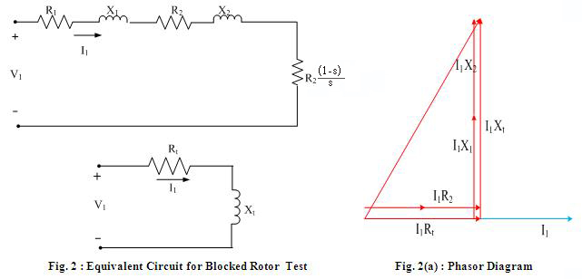

Shakshat Virtual Lab 
INDIAN INSTITUTE OF TECHNOLOGY GUWAHATI
LIST OF SYMBOLS
fbl = rated electrical frequency of the motor
V1,bl = the line-to-neutral voltage
I1,bl = the line current
Pbl = the poly-phase electrical input power
Sbl = total blocked rotor apparent power
Qbl = blocked rotor reactive power
Xbl = blocked rotor reactance
Zbl = stator input impedence
THEORY
Like the short-circuit test on a transformer, the Blocked-Rotor test on an induction motor gives information with respect to the leakage impedances. The rotor is blocked so that it cannot rotate (hence the slip is equal to unity), and balanced polyphase voltages are applied to the stator terminals.

In some cases, the blocked-rotor torque also is measured. The equivalent circuit for blocked-rotor conditions is identical to that of a short circuited transformer. An induction motor is more complicated than a transformer, however, because its leakage impedance may be affected by magnetic saturation of the leakage-flux paths and by rotor frequency. The blocked-rotor impedance may also be affected by rotor position, although this effect generally is small with squirrel-cage rotors. The guiding principle is that the blocked-rotor test should be performed under conditions for which the current and rotor frequency are approximately the same as those in the machine at the operating condition for which the performance is later to be calculated. For example, if one is interested in the characteristics at slips near unity, as in starting, the blocked-rotor test should be taken at normal frequency and with currents near the values encountered in starting. If, however, one is interested in normal running characteristics, the blocked-rotor test should be taken at a reduced voltage which results in approximately rated current; the frequency also should be reduced, since the values of rotor effective resistance and leakage inductance at the low rotor frequencies corresponding to small slips may differ appreciably from their values at normal frequency, particularly with double-cage or deep-bar rotors.
The total leakage reactance at normal frequency can be obtained from this test value by considering the reactance to be proportional to frequency. The effects of frequency often are negligible for normal motors of less than 25-hp rating, and the blocked impedance can then be measured directly at normal frequency. The importance of maintaining test currents near their rated value stems from the fact that these leakage reactances are significantly affected by saturation. Based upon blocked-rotor measurements, the blocked-rotor reactance can be found from the blocked-rotor reactive power
where Sbl= nph V1,bl I1,bl
is the total blocked-rotor apparent power. The blocked-rotor reactance, corrected to rated frequency, can then be calculated as
The blocked-rotor resistance can be calculated from the blocked-rotor input power as
Once these parameters have been determined, the equivalent circuit parameters can be determined. Under blocked-rotor conditions, an expression for the stator input impedance can be obtained (with s = 1) as
Here we have assumed that the reactances are at their rated-frequency values. Making appropriate approximations (e.g., assuming ),
Thus the apparent resistance under blocked-rotor conditions is given by
and the apparent rated-frequency blocked-rotor reactance by
The rotor leakage reactance X₂ and resistance R₂ can be found as
In order to achieve maximum accuracy as with the no-load test, if possible the value of the stator resistance should be corrected to the value corresponding to the temperature of the blocked-rotor test. Thus
Equation (xi) expresses the rotor leakage reactance X₂ in terms of the measured quantities X nl and Xbl and the unknown stator leakage reactance X1. It is not possible to make an additional measurement from which X1 and X2can be determined uniquely.Fortunately, the performance of the motor is affected relatively little by the way in which the total leakage reactance is distributed between the stator and rotor. If the motor class is unknown, it is common to assume that X1 and X2 are equal.
Once the fractional relationship between X1 and X2 has been determined, X2 (and hence X1) can be found in terms of Xnl and Xbl by solving the resultant quadratic equation. The magnetizing reactance Xm can then be determined.

Finally, using the known stator resistance and the values of Xm and X2 which are now known, the rotor resistance R2 can now be determined .